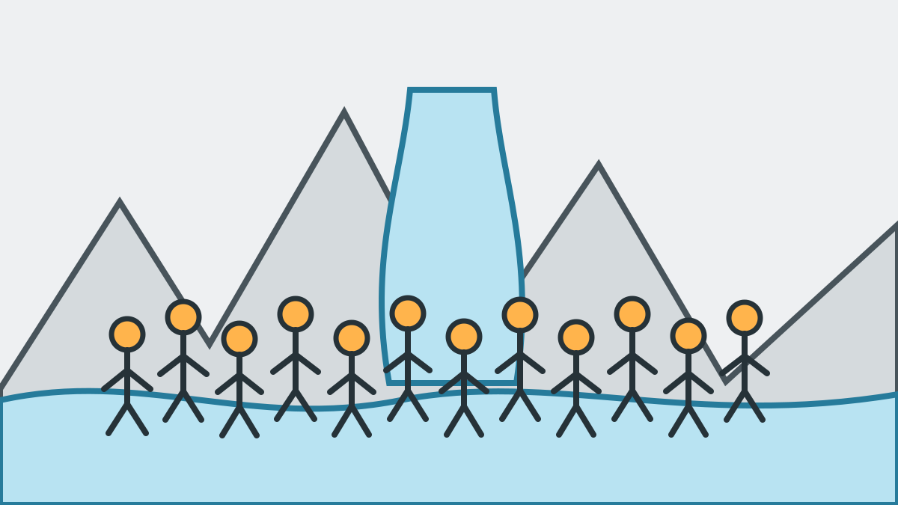

Canyoning als JGA-Idee: Passt es zu eurer Gruppe?
Canyoning ist eine starke Idee für einen Junggesellenabschied oder Junggesellinnenabschied, wenn ihr gemeinsam aktiv sein und euch später an ein echtes Gruppenerlebnis erinnern möchtet. In Österreich wird ein JGA häufig auch Polterabend oder Poltertag genannt. Bei uns erlebt ihr die Tour als private Gruppe ohne fremde Teilnehmer.
Privaten Canyoning-JGA unverbindlich anfragen

Canyoning passt gut zu eurem JGA, wenn
- alle Teilnehmer sicher schwimmen können.
- ihr gern draußen und körperlich aktiv seid.
- ihr Natur, Action und gemeinsames Erleben verbinden möchtet.
- ihr euch gegenseitig unterstützt und niemanden zu einer Mutprobe drängt.
- die Gruppe eine zur gewählten Tour passende Grundfitness und Trittsicherheit mitbringt.
Sprecht vor der Buchung mit uns, wenn
- jemand starke Höhen- oder Wasserangst hat.
- Fitness und Erwartungen innerhalb der Gruppe stark auseinandergehen.
- relevante Herz-Kreislauf- oder neurologische Erkrankungen, Verletzungen, orthopädische Einschränkungen, Schwangerschaft oder notwendige Medikamente eine Rolle spielen.
- ihr unsicher seid, welche Tour zur gesamten Gruppe passt.
Gesundheitliche Informationen können uns betroffene Teilnehmer vertraulich und persönlich per WhatsApp mitteilen. Bei ernstzunehmenden Risiken klären wir im Einzelfall, ob eine ärztliche Einschätzung erforderlich ist.
Keine verpflichtenden Mutproben
Jeder Sprung ist freiwillig und kann umgangen werden. Bei Höhen- oder Wasserangst bleiben wir eng bei der betreffenden Person und begleiten die Situation ruhig und einfühlsam. Das Ziel ist ein gutes Gruppenerlebnis, nicht die größtmögliche Sprunghöhe.
Euer privates Sorglos-Paket
- Private Tour ausschließlich für euren JGA.
- Persönliche Planung und Führung durch die autorisierte Tiroler Schluchtenführer Tanja und Mario.
- Komplette Ausrüstung mit speziellen Canyoning-Schuhen.
- Transfer ab dem vereinbarten Treffpunkt zum Einstieg und zurück.
- Fotos und Videos ohne Zusatzpreis über einen privaten Download-Link.
- Kleiner Snack sowie Bier, Radler oder Limo nach der Tour.
- Wenn mindestens 10 andere Teilnehmer zahlen, kommt die Braut oder der Bräutigam zusätzlich kostenlos mit.
Ihr bringt nur Badekleidung, Handtuch, Wechselkleidung und ev. persönlich benötigte Medikamente mit.
Welche Tour passt zu welchem JGA?
Merlins World ist ideal für Einsteiger und alle, die sich langsam ans Canyoning herantasten möchten. Kangaroo Jump ist unsere Empfehlung für die meisten sportlichen JGAs. Kobelache Intensiv ist die lange Wahl für sehr fitte Gruppen mit Ausdauer.
Die Tour wird nicht danach ausgewählt, wer am mutigsten ist, sondern danach, was für die gesamte Gruppe realistisch ist.
Alle Canyoning-Touren vergleichen
Verkleidungen, GoPros und persönliche Gegenstände
JGA-Verkleidungen und Accessoires sind nach Absprache möglich, solange sie Helm, Gurt, Bewegungsfreiheit und Sicht nicht beeinträchtigen. Eigene GoPros oder Handys in geeigneter wasserdichter Hülle können nach Rücksprache mitgeführt werden. Da wir Fotos und Videos erstellen, könnt ihr euch aber ganz auf die Tour konzentrieren und wir übernehmen die fotorgraphische Dokumentation. Brillen werden auf eigene Verantwortung getragen, Kontaktlinsen sind in der Regel unproblematisch.
Alkohol erst nach der Tour
Alkohol und berauschende Mittel sind vor und während der Tour vollständig ausgeschlossen. Bei Restalkohol oder einer anderen Beeinträchtigung können Personen ohne Erstattungsanspruch von der Teilnahme ausgeschlossen werden. Bier und Radler gibt es deshalb ausschließlich nach der Tour.
So plant der Trauzeuge oder die Trauzeugin weiter
- Prüft Schwimmkenntnisse, Fitness und grundsätzliche Bereitschaft der Gruppe.
- Vergleicht die Touren oder wählt bei der Anfrage „Noch unsicher, bitte Tour empfehlen“.
- Sendet Wunschtermin und ungefähre Teilnehmerzahl.
- Nach der Bestätigung gebt ihr Treffpunkt, Packliste und Sicherheitsregeln an alle weiter.
Vollständige Canyoning-JGA-Checkliste · Gruppe beschreiben und Empfehlung erhalten